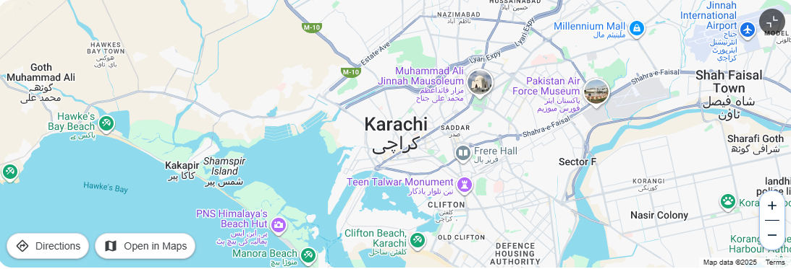
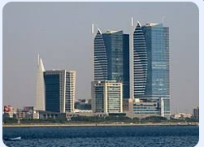

| Home |
|---|


Karachi is now Pakistan's premier and financial centre. The city has a formal economy
estimated to be worth $190 billion as of 2021, which is the largest in the countryApproximately 90% of
the multinational corporations and 100% of the banks operating in Pakistan are headquartered in Karachi
It also serves as a transport hub it was Known as the "City of Lights" in the 1960s and 1970s
for its vibrant nightlife . Karachi is located on the coastline of Sindh province in southern
Pakistan, along the Karachi
Harbour, a natural harbour on the Arabian Sea. Karachi
is built on a coastal plain with scattered rocky outcroppings, hills and marshlands. Mangrove forests
grow in the brackish waters around the Karachi Harbour (see: Chinna Creek), and farther southeast
towards the expansive Indus River Delta. West of Karachi is the Cape Monze, locally known
as Ras Muari, which is an area characterised by sea cliffs, rocky sandstone promontories and beaches.